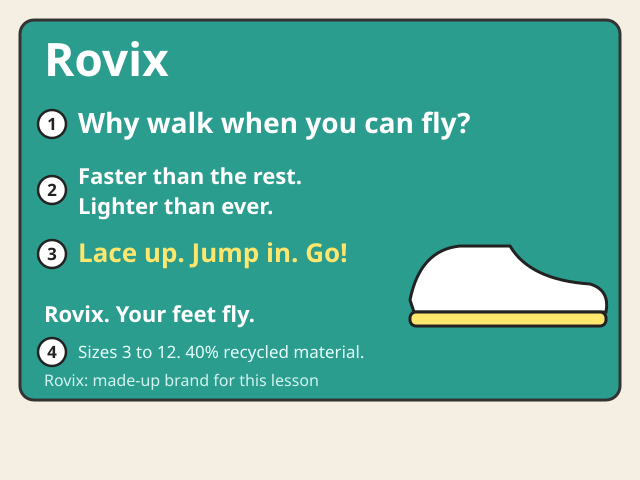
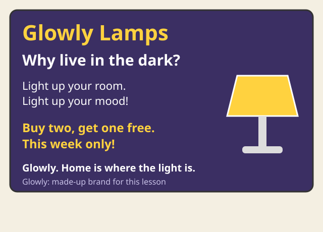
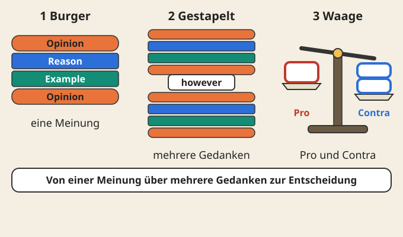

Werbung untersuchen: Mittel und Wirkung
Mit einem KI-Tutor lernen
Ein KI-Tutor erklärt dir diese Seite und hilft dir bei den Aufgaben. Wähl deinen Assistenten:
Mit Claude öffnen Mit ChatGPT öffnen Mit Mistral Vibe öffnen
Du nutzt dein eigenes Konto beim Anbieter. Der Assistent ist kein Angebot von lernapps.net: lernapps liefert nur Inhalte und Aufgaben. Die Wahl gilt für alle Seiten, nur auf diesem Gerät.
Information oder Versprechen?
 © CC-BY-4.0
© CC-BY-4.0Eine erfundene Anzeige. Die Marke Pocketvolt gibt es nicht wirklich.
Alle Anzeigen und Marken auf dieser Seite sind erfunden. Eine Anzeige sagt oft viele Dinge auf einmal. Manche kannst du nachprüfen, andere nicht.
Aufgabe
Lösung
Mit dem Gerät wird dein Tag perfekt
Nicht messbar, also ein Versprechen.
Mit dem Gerät hast du nie leere Akkus
Auch das ist ein Versprechen.
Das Gerät wiegt 120 Gramm richtige Antwort
Das kannst du messen.
Information prüfst du, ein Versprechen nicht.
Das kannst du danach: Du untersuchst eine Anzeige. Du sagst, mit welchen Mitteln sie wirkt und was davon Information ist.
Werbung und Jugendliche: sechs Fragen
| Englisch | Deutsch |
|---|---|
| advert, ad | Anzeige, Werbung |
| product | Produkt |
| service | Dienstleistung |
| buyer | Käufer, Käuferin |
| to spend, spending | ausgeben, Ausgaben |
| per cent | Prozent |
| slogan | Werbespruch |
| celebrity | berühmte Person |
| to restrict | einschränken |
| claim | Behauptung |
| promise | Versprechen |
| billion, trillion | Milliarde, Billion |
| to mislead | täuschen |
| headline | Überschrift |
| small print | Kleingedrucktes |
| means | Mittel, Methoden |
| to compete | um Kunden konkurrieren |
Die Zahlen sind die Absätze. Alle Fakten stammen aus der Quelle unter dem Text.
Advertising and young people: six questions
1 What is advertising? Advertising draws attention to a product or a service. It shows what the product can do and why it could be interesting for buyers. Adverts, or ads for short, are made to be noticed.
2 Where do we meet it? In 2025, companies worldwide were expected to spend more than one trillion US dollars on advertising. In 2024, 59.4 per cent of the money went to digital advertising and 24.9 per cent to TV. Social media alone was expected to take 247 billion dollars in 2024. So most of the money goes to adverts on screens.
3 Are slogans new? No. In August 1859 a British medicine company used the sentence "Worth a guinea a box". It is seen as the first advertising slogan. In 1882 a soap company in London asked a well-known actress to appear in its adverts. She is seen as the first celebrity to advertise a product.
4 Is advertising only bad? No, supporters see several advantages. Adverts inform consumers about new products and services, so people can find out what exists. Supporters also say that adverts help companies to compete for customers, which can push them to offer something better or cheaper. And money from advertising can pay for services that look free for users: in the 1990s, some online companies lived only from advertising and offered things like free internet access.
5 What do critics say? Critics say that adverts for food with a lot of sugar, fat and salt are often aimed at children. Children may not understand that someone wants to sell them something. Some adverts can also mislead people.
6 What rules are there? Many countries restrict adverts for alcohol, tobacco and gambling. In parts of Europe, adverts aimed at children are banned. Many rules check whether the claims in an advert are true. That is why it helps to ask which sentence is information that you can check and which one is only a promise.
7 How do adverts work on us? They use words and pictures in a clever way: a short slogan, a question, a famous face or a bright colour. The next part shows the most common means.
Quelle, abgerufen am 24.11.2026: Wikipedia, „Advertising“ (Stand 19.11.2026): Ausgaben, Werbesprüche, Vorteile, Kritik und Regeln. Der Text ist eigen formuliert.
Sechs Mittel und vier Wirkungen
 © CC-BY-4.0
© CC-BY-4.0Eine erfundene Anzeige mit vier markierten Mitteln. Die Marke Fizzlo gibt es nicht wirklich.
Merke
Eine Anzeige will etwas bewirken: attention (Aufmerksamkeit), trust (Vertrauen), curiosity (Neugier) oder urgency (Zeitdruck). Mehr zu Stilmitteln: Stilmittel.
- repetition (Wiederholung): Soft socks, soft feeling, soft life. Die Wörter bleiben im Kopf: attention.
- rhetorical question (Frage ohne Antwort): Why wait for the weekend? Du denkst weiter: curiosity.
- comparison (Vergleich mit than oder as): Our bag is lighter than any other bag. Es klingt wie ein Beweis: trust.
- imperative (Befehl): Order today. Er drängt: urgency.
- slogan (kurzer Satz der Marke): Pippa's Pies: the taste of home. Man merkt ihn sich: attention.
- emotive words (Wörter mit Gefühl): a wonderful, warm, cosy blanket. Sie wecken Gefühle: attention.
Mittel und Wirkung: Das Mittel steht im Text, die Wirkung entsteht bei dir. Frage oder rhetorical question? What time does the film start? will eine Antwort. comparison oder Bild? This bag is a rock ist ein Bild, denn es hat kein than und kein as. Information oder Versprechen? The tent weighs two kilos kannst du prüfen, the best tent ever nicht.
Mittel erkennen, Wirkung wählen, Anzeige untersuchen
Aufgabe
Lösung
Etwa 25 Prozent
Das ist der Anteil des Fernsehens.
Etwa 59 Prozent richtige Antwort
Das steht in Absatz 2.
Eine Billion US-Dollar
Das ist die Summe, keine Prozentzahl.
Absatz 2 nennt zwei Anteile.
Aufgabe
Lösung
Absatz 2
Hier stehen Zahlen zu Ausgaben.
Absatz 3 richtige Antwort
Dort steht das Jahr 1859.
Absatz 4
Hier geht es um Vorteile von Werbung.
Absatz 5
Hier geht es um Kritik.
Das 19. Jahrhundert endet 1900.
Aufgabe
Lösung
Richtige Antwort: Crunch after crunch after crunch. – repetition; Isn't it time for a change? – rhetorical question; Our trainers are cheaper than any others. – comparison; Join the team today. – imperative; Tavok, the bike for every road. – slogan; Delicious, brilliant, simply amazing! – emotive words
Achte auf than, Fragezeichen und Befehle.
Aufgabe
Lösung
curiosity
Neugier kommt von Fragen.
trust
Vertrauen kommt von Beweisen.
urgency richtige Antwort
Die Zeit läuft ab.
imperative
Das ist ein Mittel, keine Wirkung.
Die Wirkung ist das Ziel der Anzeige.
Aufgabe
Lösung
Do you want red or blue?
Hier sollst du antworten.
Who wants to be second best? richtige Antwort
Niemand erwartet eine Antwort.
What time does the shop open?
Das ist eine echte Frage.
Die Antwort steckt in der Frage.
Aufgabe
Untersuche die Anzeige. Sie hat vier nummerierte Blöcke. Schreibe Sätze nach dem Muster „The … uses … to create …“. Satz 4 sagt, was du prüfen kannst. Ergänze, was für einen ganzen Satz fehlt.

© CC-BY-4.0Eine erfundene Anzeige. Die Marke Rovix gibt es nicht wirklich.
- block 1 · rhetorical question · curiosity
- block 3 · imperatives · urgency
- block 2 · comparisons · trust
- block 4 · small print · information · you · can check
Lösung
- The first block uses a rhetorical question to create curiosity. (auch richtig: The headline uses a rhetorical question to create curiosity.; Block 1 uses a rhetorical question to create curiosity.; Block one uses a rhetorical question to create curiosity.)
- The third block uses imperatives to create urgency. (auch richtig: The third block uses an imperative to create urgency.; The third block uses the imperative to create urgency.; Block 3 uses imperatives to create urgency.; Block 3 uses an imperative to create urgency.; Block 3 uses the imperative to create urgency.; Block three uses imperatives to create urgency.; Block three uses an imperative to create urgency.; Block three uses the imperative to create urgency.)
- The second block uses comparisons to create trust. (auch richtig: The second block uses a comparison to create trust.; Block 2 uses comparisons to create trust.; Block 2 uses a comparison to create trust.; Block two uses comparisons to create trust.; Block two uses a comparison to create trust.)
- The small print gives information that you can check. (auch richtig: The small print gives information which you can check.)
Aufgabe
Hör zu und schreibe, was du hörst.
- KI
- KI
- KI
Lösung
- A short slogan is easy to remember.
- Think about the people the advert wants to reach.
- Some promises sound great but cannot be checked.
Untersuche eine Anzeige
Aufgabe
Hör zu, sprich nach und nimm dich auf. Vergleiche dann mit dem Original.
Tipp
Hör zu. Sprich dann langsam nach.
- Is this information or a promise?KI
- Both adverts want to get your attention.KI
- I would like to look at another advert.KI
Zum Aufnehmen braucht diese Aufgabe JavaScript. Die Beispiele kannst du auch ohne anhören.
Lösung
- Is this information or a promise?
- Both adverts want to get your attention.
- I would like to look at another advert.

© CC-BY-4.0Eine weitere erfundene Anzeige. Die Marke Glowly gibt es nicht wirklich.
Offene Aufgabe
Untersuche die Anzeige für Glowly Lamps in vier bis fünf englischen Sätzen. Nenne Mittel und Wirkung und sage, was Information und was nur ein Versprechen ist.
Tipp
Die App bewertet nicht. Prüfe deinen Text anhand der Punkte.
Eine gute Antwort enthält:
- Du nennst mindestens drei Mittel der Anzeige mit ihrem englischen Namen. Nachlesen
- Du sagst zu jedem Mittel die Wirkung (attention, trust, curiosity oder urgency). Nachlesen
- Du trennst Information, die man prüfen kann, von einem Versprechen. Nachlesen
- Du schreibst ganze Sätze nach dem Muster The … uses … to create …. (Form)
Lösung
The headline is a rhetorical question and creates curiosity. The second and third lines use repetition and imperatives to create attention and urgency. The line This week only! creates urgency, because time is running out. The slogan is short and easy to remember. The offer "buy two, get one free" is information that you can check, but the promise that a lamp lights up your mood cannot be checked.
Rückblick: vom Burger zur Waage

© CC-BY-4.0Die drei Bilder der App: der Burger, die gestapelten Burger und die Waage.
In dieser App hast du gelernt, eine Meinung zu begründen (Burger), mehrere Gedanken mit Verbindungswörtern zu halten (gestapelte Burger) und Argumente abzuwägen (Waage). In diesem Kapitel hast du Konsum, Jugendkulturen, den Kommentar und Werbung untersucht. Nun kannst du Argumente in deinen eigenen Texten bauen und Werbung untersuchen. Jede Schale der Waage besteht aus Burgern: Opinion, Reason, Example.
Fehler gefunden oder eine Idee für diese App?